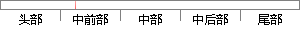

，一个检测多种恶意域名的系统。
片段位置图

相似结果|
相似片段 1：设计与实现 63 第六章 恶意网页检测系统设计与实现 根据前面介绍的相关思路，本文设计了一个恶意网页检测系统并且对系统各个模块进行实现。 6.1 系统设计目标 通过对现有的多种恶意网页检测系统进行研究
相似片段 2：二维码扫描检测流程 钓鱼网站和恶意链接每天都在更新，时刻威胁着用户的支付安全，对于这些安全隐患，采取两种策略进行防护。第一种策略是通过钓鱼网站和恶意链接的域名信息，判断一个链接地址 URL 的安全性。该
相似片段 3：。在域名过滤系统中，应该配置有效的检测手段，应将两种蜜罐系统结合使用，验证恶意服务器，根据其危害性，赋予不同的权值，进行不同的处理。3．9小结恶意服务器的危害日益严重，对其的防范与控制尤为重要。针对不同
相似片段 4：网页自身特征之外，选取了多种新的特征来检测恶意网页，包括 Google PageRank 值及搜索结果数、Alexa 流量信息、域名信息、WOT 声誉值等。相对于以往检测网页所选择的特征而言，本文得到
相似片段 5：中的分类模型来获得。首先，对大量的恶意网页与正常网页进行深入分析，除了考虑网页自身特征之外，选取了多种新的特征来检测恶意网页，包括GooglePageRank值及搜索结果数、Alexa流量信息、域名
相似片段 6：检测方法的局限性和不足，并重点分析了基于机器学习的恶意网站检测方法； （2）对恶意网站特征进行了详细分析，提出了一种基于 WOE 算法的域名注册机构特征提取方法。该方法仅使用一个特征来表示不同域名
|
※ 片段修改建议 ※
近似词参考：- 恶意：歹意
- 系统：体系
系统自动生成语句：，一个检测多种歹意域名的体系。
注：本片段修改建议为系统自动生成，仅供参考。